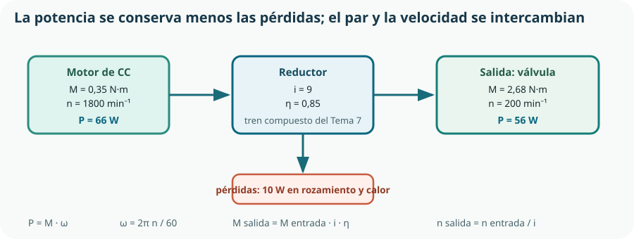

Este es el tema donde la materia se convierte en ingeniería. Hasta aquí hemos descrito mecanismos; ahora hay que dimensionarlos: decidir cuántos dientes, cuánta potencia, qué sección, con qué margen. Es donde se materializa la competencia 4 del currículo —transferir conocimientos de otras disciplinas científicas para calcular y resolver problemas— y donde las matemáticas y la física dejan de ser asignaturas para convertirse en herramientas de trabajo.
- plantear un cálculo mecánico declarando datos, hipótesis, unidades y resultado con sus cifras significativas;
- calcular relaciones de transmisión en trenes simples y compuestos, y deducir la velocidad de cualquier eje;
- relacionar par, velocidad angular, potencia y rendimiento, y encadenar rendimientos;
- calcular momentos y aplicar las condiciones de equilibrio a un elemento sencillo;
- dimensionar un accionamiento a partir de un requisito de movimiento, con coeficiente de seguridad;
- comprobar un diseño con un simulador antes de fabricarlo;
- montar, medir y ajustar un mecanismo, y contrastar lo medido con lo calculado;
- explicar una desviación entre cálculo y realidad en lugar de ignorarla.
1. Transferir matemáticas y física al cálculo mecánico
El criterio 4.1 pide «resolver problemas asociados a sistemas e instalaciones mecánicas». Las herramientas ya las tienes; lo que cambia es el uso.
| Procede de | Herramienta | Para qué se usa aquí |
|---|---|---|
| Matemáticas | Proporcionalidad y despeje. | Relaciones de transmisión y cadenas de cálculo. |
| Matemáticas | Trigonometría. | Descomponer fuerzas y calcular brazos de palanca. |
| Matemáticas | Notación científica y cifras significativas. | Expresar resultados con la precisión que los datos sostienen. |
| Física | Fuerza, momento y equilibrio. | Comprobar que el mecanismo no vuelca ni se dobla. |
| Física | Trabajo, energía y potencia. | Dimensionar el motor y calcular el consumo. |
| Física | Rozamiento. | Estimar el rendimiento y el par resistente. |
| Tema 2 | Medida, incertidumbre y tolerancia. | Saber cuántas cifras del resultado son reales. |
| Tema 5 | Límite elástico y coeficiente de seguridad. | Decidir si la sección elegida aguanta. |
2. Calcular trenes de engranajes
Retomamos el reductor del Tema 7 y lo resolvemos entero. El tren tiene dos etapas: Z₁ = 20 engrana con Z₂ = 60, y Z₃ = 15, solidario con Z₂, engrana con Z₄ = 45.
i1 = Z2/Z1 = 60/20 = 3 · i2 = Z4/Z3 = 45/15 = 3 · i = i1·i2 = 9
| Eje | Ruedas | Cálculo | n (min⁻¹) | ω (rad/s) |
|---|---|---|---|---|
| Entrada | Z₁ = 20 | dato | 1800 | 188,5 |
| Intermedio | Z₂ = 60 y Z₃ = 15 | 1800 / 3 | 600 | 62,8 |
| Salida | Z₄ = 45 | 600 / 3 | 200 | 20,9 |
Un tren con rueda loca
Si entre Z₁ y Z₂ se intercala una rueda de Z = 30, ¿qué cambia? La rueda loca es a la vez salida de un engrane y entrada del siguiente:
i = (30/20) · (60/30) = 60/20 = 3 la rueda intermedia se cancela: solo cambia el sentido de giro
La relación es exactamente la misma. Es la propiedad de los trenes simples del Tema 7, ahora demostrada: las ruedas intermedias no alteran la relación total porque aparecen una vez en el numerador y otra en el denominador.
3. Par, potencia y rendimiento
Ahora los números del par, que es lo que de verdad decide si el mecanismo sirve.

Cálculo paso a paso
| Paso | Operación | Resultado |
|---|---|---|
| Velocidad angular de entrada | ω = 2π · 1800 / 60 | 188,5 rad/s |
| Potencia de entrada | P = 0,35 · 188,5 | 66,0 W |
| Rendimiento del tren | η = 0,95 · 0,95 (dos etapas) | 0,90 |
| Rendimiento total | η · ηcojinetes ≈ 0,90 · 0,94 | 0,85 |
| Potencia de salida | P = 66,0 · 0,85 | 56,1 W |
| Velocidad angular de salida | ω = 188,5 / 9 | 20,9 rad/s |
| Par de salida | M = 56,1 / 20,9 | 2,68 N·m |
| Comprobación | M = 0,35 · 9 · 0,85 | 2,68 N·m ✓ |
4. Fuerzas, momentos y equilibrio
Los mecanismos ejercen fuerzas sobre sus soportes, y esos soportes tienen que aguantarlas. Para comprobarlo basta con las dos condiciones de equilibrio que ya conoces de Física.
Σ F = 0 la suma de todas las fuerzas es nula
Σ M = 0 la suma de todos los momentos respecto a cualquier punto es nula
Ejemplo: la fuerza en el diente
El engranaje Z₄ tiene 45 dientes de módulo 1, luego su diámetro primitivo es D = m · Z = 45 mm, y su radio 22,5 mm = 0,0225 m. Con un par de 2,68 N·m, la fuerza tangencial en el diente es:
F = M / r = 2,68 / 0,0225 ≈ 119 N unos 12 kg de fuerza en un diente de 1 mm de módulo
Ese número tiene consecuencias: decide si el diente resiste, qué carga soportan los cojinetes y qué rigidez necesita el soporte impreso del Tema 6. Un par que parecía inofensivo se convierte en una fuerza considerable cuando el radio es pequeño.
Ejemplo: el soporte en voladizo
El motorreductor pesa 180 g y va atornillado a una placa que sobresale 60 mm del apoyo. Su peso es F = m·g = 0,180 · 9,81 ≈ 1,77 N, y el momento que produce en el empotramiento es:
M = F · d = 1,77 · 0,060 ≈ 0,106 N·m
Pequeño, pero no despreciable si la placa es de PETG de 3 mm: hay que comprobarlo, y sobre todo hay que recordar que ese momento actúa siempre, día y noche, durante tres veranos. Los polímeros sometidos a carga constante sufren fluencia: se deforman lentamente con el tiempo aunque la tensión esté muy por debajo del límite elástico. Es la razón de que un estante de plástico acabe combado.
5. Del requisito al mecanismo
Hasta ahora hemos comprobado un diseño dado. Diseñar es el camino inverso: partir del requisito y llegar a las piezas. Se hace en cinco pasos.
Qué tiene que moverse, cuánto, en cuánto tiempo y contra qué resistencia. «El obturador recorre 8 mm en menos de 2 s venciendo 2,5 N·m.»
Del requisito salen el par resistente y la velocidad de salida. Se añade el coeficiente de seguridad: 2,5 × 1,5 = 3,75 N·m de diseño.
P = M · ω en la salida, dividida por el rendimiento estimado de la transmisión. Es el número con el que se busca motor.
Se busca en catálogo un motor que dé esa potencia, y la relación sale de dividir su velocidad entre la velocidad de salida requerida.
Con el par ya conocido se calculan fuerzas en dientes, cargas en apoyos y secciones, y se comprueba cada una contra el material del Tema 5.
6. Simular antes de montar
El currículo admite expresamente «experimentación física o simulada». La simulación no sustituye al montaje, pero permite equivocarse barato y muchas veces, que es exactamente lo que pedía el Tema 1.
| Pregunta | Herramienta | Qué se obtiene |
|---|---|---|
| ¿Las piezas encajan y se mueven sin chocar? | Ensamblaje CAD (Tema 3) | Interferencias y recorridos reales. |
| ¿Qué trayectoria describe el mecanismo? | GeoGebra o simulador de mecanismos | Posición, velocidad y aceleración a lo largo del ciclo. |
| ¿Se dobla el soporte? | Módulo de análisis del CAD (CAE) | Tensiones y deformaciones bajo la carga aplicada. |
| ¿Cómo se comporta con rozamiento y gravedad? | Algodoo | Comportamiento dinámico aproximado, muy útil para explicar. |
7. Montar, medir y ajustar
El montaje es un procedimiento, no una improvisación. Y termina siempre con medidas, porque un mecanismo que funciona pero no se ha medido no ha demostrado nada.
Comprobar que todas las piezas están y que sus cotas críticas coinciden con el plano. Una pieza fuera de tolerancia detectada ahora ahorra desmontar después.
El orden lo fija el diseño para el montaje del Tema 6. Apretar por pasos y en cruz, nunca un tornillo del todo antes que los demás.
Comprobar la alineación de ejes antes de dar tensión. Es la causa de fallo del Tema 8 y no se ve en el plano.
Girar el mecanismo sin motor. Si no gira suave con la mano, no girará mejor con el motor: girará hasta romperse.
Velocidad de salida, carrera, tiempo de ciclo y corriente del motor, que es un indicador indirecto y excelente del par resistente.
Cada ajuste, al registro de cambios del Tema 1, con su motivo.
| Magnitud | Calculado | Medido | Desviación | Explicación |
|---|---|---|---|---|
| Velocidad de salida | 200 min⁻¹ | 196 min⁻¹ | −2 % | Caída de velocidad del motor bajo carga: normal. |
| Tiempo de apertura | 1,6 s | 1,9 s | +19 % | Rozamiento del retén, no considerado en el cálculo. |
| Carrera del obturador | 8,0 mm | 7,6 mm | −5 % | Juego axial del husillo: falta un casquillo de tope. |
| Corriente en régimen | — | 310 mA | — | Dato nuevo: dimensiona la alimentación del Tema 10. |
8. Aplicación al KR-1: el cálculo completo
Reunimos todo en la memoria de cálculo del accionamiento, tal como se escribiría en el documento del Tema 4.
| Apartado | Contenido |
|---|---|
| Requisito | Abrir y cerrar el obturador, 8 mm de carrera, en menos de 2 s, contra un par resistente medido de 2,5 N·m. |
| Hipótesis | Rozamiento del retén despreciable (se comprobará). Rendimiento de cada etapa 0,95 y de los cojinetes 0,94. Coeficiente de seguridad 1,5 sobre el par resistente. |
| Par de diseño | M = 2,5 · 1,5 = 3,75 N·m. Nota: con el motor elegido se obtienen 2,68 N·m, insuficientes; véase la conclusión. |
| Velocidad de salida | Con husillo de paso 2 mm, 8 mm exigen 4 vueltas; en 2 s, 120 min⁻¹ mínimo. Se adopta 200 min⁻¹. |
| Relación | i = 1800 / 200 = 9, obtenida con dos etapas de 3. |
| Rendimiento | η = 0,95² · 0,94 = 0,85. |
| Par disponible | M = 0,35 · 9 · 0,85 = 2,68 N·m. |
| Fuerza en el diente | F = 2,68 / 0,0225 = 119 N en Z₄. |
| Conclusión | El accionamiento cubre el par resistente medido (2,5 N·m) pero no el par de diseño (3,75). Se recalcula con un motor de 0,5 N·m, que da 3,83 N·m, o se sube la relación a 13. |
Comprueba lo que has aprendido
Este tema se demuestra con una memoria de cálculo que otra persona pueda revisar y con medidas que la contrasten.
| Aspecto | Qué debes demostrar | Evidencias posibles |
|---|---|---|
| Plantear | Que declaras datos, hipótesis y unidades antes de calcular. | Memoria con los seis apartados, hipótesis explícitas y análisis dimensional de al menos una fórmula. |
| Calcular | Que resuelves relaciones, pares, potencias, rendimientos y momentos sin errores de unidades. | Tabla de velocidades por eje, cadena de potencia completa y una comprobación por dos caminos. |
| Dimensionar | Que partes del requisito y llegas a una referencia de catálogo, con coeficiente de seguridad justificado. | Los cinco pasos del dimensionado y la referencia comercial elegida con su motivo. |
| Simular y montar | Que compruebas antes de fabricar y que mides después de montar. | Informe de interferencias, procedimiento de montaje seguido y acta de medidas. |
| Contrastar | Que comparas lo calculado con lo medido y explicas cada desviación. | Tabla calculado-medido-desviación-explicación, con al menos una hipótesis corregida. |
Cierre del Bloque C: el KR-1 ya tiene un accionamiento calculado, montado y medido. Falta la electricidad que lo mueva, y ese es el Bloque D.
Glosario del tema
- Análisis dimensional
- Comprobación de que las unidades de una expresión son coherentes; detecta errores de planteamiento.
- Brazo
- Distancia perpendicular entre la línea de acción de una fuerza y el punto respecto al que se toma el momento.
- Cifras significativas
- Dígitos de un resultado que la precisión de los datos permite sostener.
- Coeficiente de seguridad
- Factor que reduce la tensión admisible para absorber la incertidumbre de cargas, material y fabricación.
- Diámetro primitivo
- Diámetro teórico de un engranaje sobre el que se calcula la transmisión; es el módulo por el número de dientes.
- Fluencia
- Deformación lenta y progresiva de un material sometido a carga constante durante mucho tiempo.
- Fuerza tangencial
- Componente de la fuerza en el diente en la dirección del movimiento; es el par dividido por el radio.
- Hipótesis de cálculo
- Suposición declarada que se adopta ante un dato desconocido, y que debe comprobarse después.
- Memoria de cálculo
- Documento que recoge datos, hipótesis, ecuaciones, resultados y conclusiones de un dimensionado.
- Momento
- Producto de una fuerza por su brazo respecto a un punto o eje.
- Par de arranque
- Par que un motor entrega con el eje parado; suele ser mayor que el nominal y es el que decide si el mecanismo arranca.
- Par resistente
- Par que la carga opone al movimiento y que el accionamiento debe vencer.
- Rozamiento estático
- Resistencia al inicio del movimiento, mayor que la que aparece una vez en marcha.
Resumen esencial
- Un cálculo de ingeniería se presenta con datos, hipótesis, ecuaciones simbólicas, sustitución, resultado y comprobación; si no se puede revisar, no vale.
- Las unidades son la mitad del trabajo: pasar todo al Sistema Internacional y usar el análisis dimensional como comprobación.
- En un tren compuesto las relaciones se multiplican; las ruedas locas se cancelan y solo cambian el sentido.
- La potencia de un eje es el par por la velocidad angular; al reducir la velocidad, el par se multiplica por la relación y por el rendimiento.
- Los rendimientos se multiplican entre sí, de modo que encadenar elementos degrada el conjunto más deprisa de lo que parece.
- El par que decide si el mecanismo arranca es el de arranque, no el nominal, porque el rozamiento estático es mayor.
- Un par pequeño produce fuerzas grandes cuando el radio es pequeño: 2,68 N·m dan 119 N en un engranaje de módulo 1.
- El coeficiente de seguridad no se copia de una tabla: expresa cuánta incertidumbre hay en tu cálculo, y se justifica por escrito.
- Diseñar es ir del requisito de movimiento al par, de ahí a la potencia, de ahí al catálogo y de ahí al dimensionado de las piezas.
- El catálogo manda sobre el cálculo: se elige entre lo que existe y se rehace el cálculo con el valor real.
- La simulación devuelve lo que se le ha metido: sirve para decidir qué medir, no para sustituir la medida.
- Un mecanismo que no gira suave con la mano no girará mejor con el motor.
- Medir sirve para encontrar lo que no sabías; cada desviación entre lo calculado y lo medido identifica una hipótesis que faltaba.
- Un cálculo que demuestra que el diseño no cumple ha hecho su trabajo: es la forma más barata de equivocarse.
Fuentes y recursos fiables
- [1] Centro Español de Metrología. Unidades del Sistema Internacional y expresión de resultados de medida.
- [2] GeoGebra. Construcción y análisis dinámico de mecanismos y de sus leyes de movimiento.
- [3] Algodoo. Simulación dinámica con gravedad y rozamiento.
- [4] FreeCAD. Ensamblaje, comprobación de interferencias y análisis estructural por elementos finitos.
- [5] UNE — Asociación Española de Normalización. Cálculo de la capacidad de carga de engranajes cilíndricos (serie UNE-ISO 6336).
- [6] Decreto 64/2022, de 20 de julio (BOCM). Currículo de Tecnología e Ingeniería I, bloque C, competencia 4 y criterio 4.1.